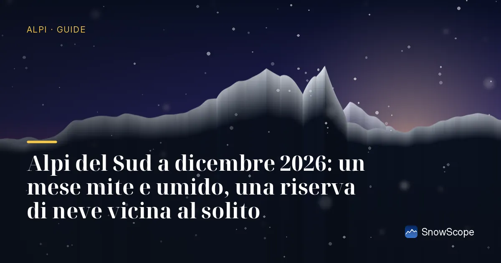

Alpi del Sud a dicembre 2026: un mese mite e umido, una riserva di neve vicina al solito
La neve di dicembre è acqua immagazzinata in montagna per lo scioglimento primaverile. Le Alpi Meridionali affronteranno un mese più caldo e più umido, eppure la profondità della neve il 31 dicembre dovrebbe rimanere vicina al suo livello usuale. La maggior parte della catena non mostra un pattern chiaro; solo il versante occidentale francese tende più asciutto.
Le previsioni neve in tempo reale per Southern Alps nell'app SnowScopeAltezza neve, allerte powder e mappa 3D, gratis.

Nessun segnale sulla maggior parte della catena
Quando confrontiamo ogni zona di montagna di 10 km con i suoi ultimi 45 dicembre, quattro zone su cinque—da Briançon fino a Sestriere e giù verso Cuneo—non mostrano nessuna tendenza né in un senso né nell'altro. La fascia occidentale vicino a Grenoble e le valli francesi oltre tilta più asciutto, ma nulla tilda più nevoso.
La probabilità di un dicembre più umido del solito varia dal 31 % al 55 % in tutta la regione, con una mediana del 45 %. Questa dispersione riflette la complessità delle Alpi Meridionali: alcune valli possono ricevere neve extra mentre altre rimangono povere.
Il caldo guida la previsione; la pioggia cade più in basso
Le 51 previsioni del centro meteorologico europeo sono quasi unanimi su un punto: l'88 % di esse prevede dicembre 1,7 °C più caldo della media usuale. Questo caldo è la parte più affidabile di questo outlook. Le precipitazioni aumentano anche—14 % sopra i 101 mm normali—e il 61 % delle simulazioni è più umido della media.
Per lo stoccaggio della neve, il compromesso è importante. L'aria calda e il flusso umido del Mediterraneo significano che i picchi più alti ricevono neve mentre i versanti più bassi e i passi vedono pioggia. La profondità della neve dipende da questo equilibrio. Il risultato: le profondità a fine anno rimangono vicine a quello che i dicembre passati hanno lasciato.


Versante francese: 61 cm al 31 dicembre
Le Alpi Meridionali francesi (Serre-Chevalier, Vars e Risoul, Orcières, Valberg, Dévoluy) vedono un dicembre con 1,5 °C sopra la norma e precipitazioni l'8 % più alte del solito. L'outlook per la neve fresca è di 44 cm, leggermente inferiore ai tipici 48 cm che gli ultimi 45 anni hanno portato.
Il 31 dicembre, la profondità prevista è di 61 cm. Ciò corrisponde quasi esattamente ai soliti 62 cm. Tre dicembre passati—2023, 2022 e 2018—corrispondono più da vicino al pattern di questa previsione. La gamma delle profondità probabili varia da 49 cm a 85 cm, quindi pianificate per condizioni tipiche di inizio stagione.
Versante italiano: stabile a 64 cm
Oltre il confine nella Valle d'Aosta e in Piemonte (Courmayeur, Sestriere, Monterosa, Pila), dicembre sarà 1,4 °C più caldo della norma, con precipitazioni il 7 % sopra la media passata. L'outlook mantiene la neve fresca a 43 cm, la stessa di un dicembre tipico.
Il 31 dicembre, le profondità sono previste a 64 cm, di nuovo corrispondendo alla norma dei 45 anni. Metà dei membri della previsione mostra neve più profonda del solito, metà più superficiale. Gli analoghi più vicini sono ancora 2023, 2018 e 2022. Gli sciatori sul versante italiano dovrebbero aspettarsi condizioni di fascia media piuttosto che estremi.
Cosa significa questo outlook per il vostro viaggio
Un outlook vicino alla norma è rassicurante ma poco ispirante. Dice: prenotate il vostro viaggio di dicembre senza timore di una carenza di neve, ma non aspettatevi un mese straordinario. Il caldo previsto è il segnale in cui confidiamo di più, quindi puntate sui pendii ad alta quota e il terreno esposto a nord all'inizio di dicembre, dove l'aria fredda persiste.
Un outlook come questo non può prevedere tempeste singole. Quando una bassa pressione mediterranea appare nella previsione a 7 giorni, le Alpi Meridionali possono immagazzinare neve sostanziale in uno o due giorni. L'inizio di dicembre è tipicamente più tranquillo; cercate tempeste dalla metà del mese in poi. Confrontate le singole stazioni sulla mappa SnowScope—la profondità della neve varia notevolmente da valle a valle.
Consigli per sciatori
- Puntate sugli impianti più alti e sui pendii esposti a nord all'inizio di dicembre, quando l'aria è più fredda e la pioggia è meno probabile in quota.
- Controllate la previsione a 7 giorni settimanalmente per le depressioni mediterranee: consegnano la maggior parte della neve di dicembre a questa regione in brevi raffiche.
- Sfogliate la mappa SnowScope prima di prenotare per vedere quale valle contiene più neve; la differenza tra stazioni vicine può essere di 20–30 cm.
- Se la neve fresca arriva, puntate sui pendii superiori entro poche ore; i giorni più caldi possono ammorbidire o sciogliere la copertura di inizio stagione rapidamente.
- Portate strati e una giacca antipioggia: dicembre porta tanta acqua quanta neve, e il limite tra i due cambia con l'altitudine e l'ora del giorno.
Su questi numeri
Le altezze neve delle località sono la neve più alta sui pendii superiori alla data indicata; sono stime per un'area, non una misura in un punto. Le previsioni possono cambiare. Leggi sempre il bollettino valanghe ufficiale prima del fuoripista.
Cita questo articolo
Per ricerca, didattica o stampa: numeri e grafici sono liberamente riutilizzabili con licenza CC BY 4.0 citando così.
SnowScope (2026), Alpi del Sud a dicembre 2026: un mese mite e umido, una riserva di neve vicina al solito, https://snowscope.app/blog/it/2026/11/southern-alps-december-2026-snow-outlook.html, consultato il 2026-11-10
SnowScope (Atlas Labs). (2026, November 10). Alpi del Sud a dicembre 2026: un mese mite e umido, una riserva di neve vicina al solito. SnowScope snow reports. https://snowscope.app/blog/it/2026/11/southern-alps-december-2026-snow-outlook.html
BibTeX
@misc{snowscope2026southernalpsdecember2026,
author = {{SnowScope (Atlas Labs)}},
title = {Alpi del Sud a dicembre 2026: un mese mite e umido, una riserva di neve vicina al solito},
year = {2026},
month = nov,
howpublished = {\url{https://snowscope.app/blog/it/2026/11/southern-alps-december-2026-snow-outlook.html}},
note = {Published 2026-11-10 09:31 UTC; accessed 2026-11-10}
}· CC BY 4.0 · Metodi, dati e strumenti →
Segui Southern Alps
Gratis: un messaggio quando arriva la neve e il meteo ogni mattina.
Altri bollettini neve

Chantarella, Marguns, Piz Nair, White Turf: le parole che si sentono a St. Moritz, spiegate, e cosa dicono 46 inverni passati del nostro storico neve su ogni quota della Corviglia.

Dieci punti pratici per una vacanza sugli sci a Livigno: le strade, il freddo, i negozi duty-free, i due versanti e il periodo migliore per la neve, da 46 inverni passati del nostro storico.